Écoute ça. Hé Grok, sors ma voiture de l'allée. D'accord, bien sûr. Je déplace ta Tesla maintenant vers le début de la rue. Tesla vient de transformer ta voiture en assistant robot. Et tu peux la contrôler avec ta voix. Ta Tesla est maintenant garée à l'avant. Ouais, c'est insensé. Tesla a officiellement lancé GrokBot à l'intérieur de ses voitures.
Interface & Outils : Écran de contrôle Tesla
Contenu textuel & Code : Texte incrusté : "Moving your Tesla", "Tesla just into a robot assistant" et sous-titres "yeah"
Action / Démonstration : Démonstration visuelle d'une Tesla en mouvement et présentation de ses fonctionnalités autonomes.
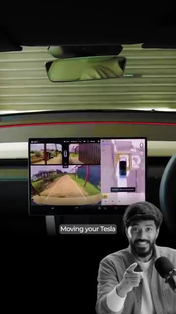
🔍 Agrandir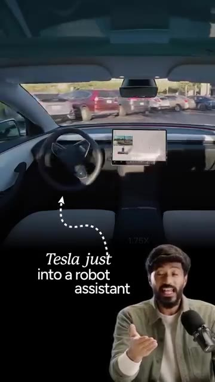
🔍 Agrandir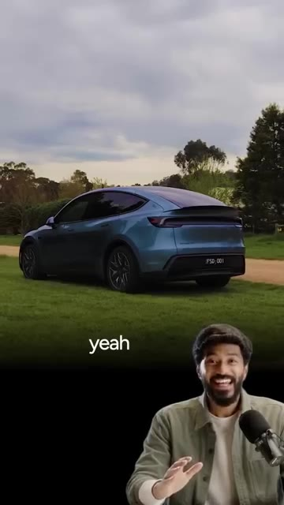
🔍 AgrandirMaintenant, il ne s'agit pas juste d'un autre chatbot installé sur votre tableau de bord. Vous pouvez réellement donner un travail à Grok. Et il peut aller le faire pour vous. Grâce à ses connecteurs, Grok peut fonctionner avec des éléments comme votre e-mail et votre calendrier, et vous pouvez l'utiliser pour des choses comme la prise de rendez-vous, des réservations et même pour commander des articles en ligne. Mais c'est là que ça devient vraiment intéressant. Grok sait que vous êtes à l'intérieur d'une Tesla. Il peut donc combiner ce que vous demandez avec l'emplacement de votre voiture et votre itinéraire.
Interface & Outils : X (anciennement Twitter) / Publication de Tesla
Contenu textuel & Code : Texte du tweet de Tesla décrivant les fonctionnalités de Grok pour effectuer des tâches complexes comme commander du café ou réserver un rendez-vous.
Action / Démonstration : Présentation des capacités d'automatisation et des fonctionnalités avancées de Grok via une publication officielle de Tesla.
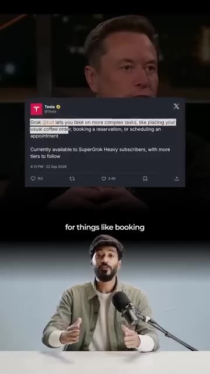
🔍 AgrandirImaginez monter dans votre Tesla et dire : « Je suis en retard. Trouve-moi un café sur mon trajet et commande-moi un cappuccino. » Grok passe la commande pendant que votre Tesla vous y conduit. Ainsi, lorsque vous arrivez, votre café vous attend déjà. Ou imaginez ce scénario : vous pouvez dire à votre voiture : « Je vais avoir 20 minutes de retard pour ma réunion. Prévenez-les et déplacez-la à demain après-midi. » Vous n'avez pas besoin d'ouvrir cinq applications différentes.
Interface & Outils : Écran tactile de bord de véhicule Tesla, interface assistant Grok.
Contenu textuel & Code : Texte sous-titré lié à une commande vocale de café ("and order me", "your coffee is already", "20 minutes late").
Action / Démonstration : Démonstration visuelle d'un cas d'usage IA intégrant un véhicule connecté et un service de commande.
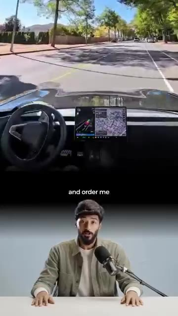
🔍 Agrandir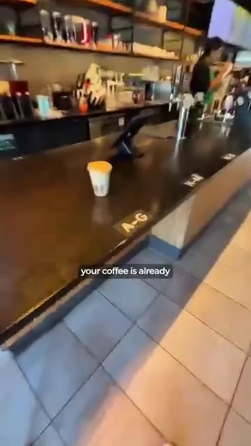
🔍 Agrandir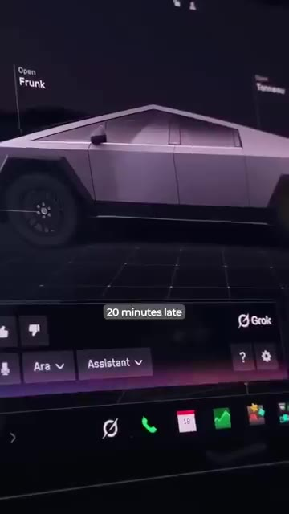
🔍 AgrandirTu dis simplement à une IA ce que tu veux et tu la laisses trouver les étapes, de la vérification de ton calendrier à l'envoi du message. Et c'est ça le vrai changement. L'IA commence à avoir un corps physique. Et une voiture est l'un des endroits les plus intéressants pour commencer. Avant de t'enthousiasmer, il y a une chose que tu dois savoir. Les actions avancées en plusieurs étapes nécessitent actuellement un abonnement super grok payant. Mais les connecteurs de base peuvent être utilisés par n'importe qui dès maintenant.
Interface & Outils : Écran tactile de tableau de bord automobile, interface de navigation et de commande du véhicule.
Contenu textuel & Code : Interface utilisateur de contrôle de véhicule avec options de navigation et commandes tactiles. [DESC_IMAGE_1] Démonstration de l'utilisation d'un système intelligent embarqué dans un véhicule en circulation.
Action / Démonstration : Explications face caméra et présentation conceptuelle.
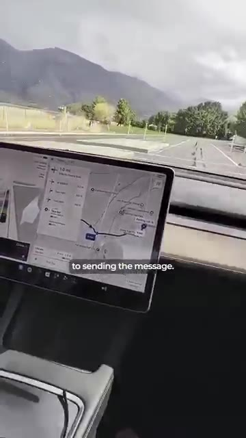
🔍 Agrandir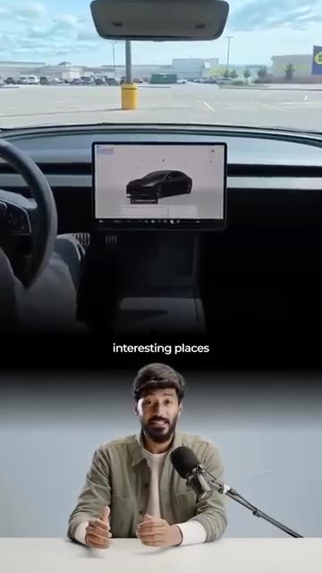
🔍 Agrandir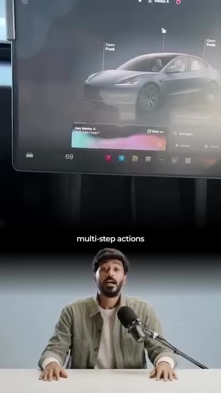
🔍 AgrandirVotre Tesla vient juste de devenir votre agent IA personnel sur roues. C'est peut-être à cela que ressemblent les robots du futur. Franchement, voir Elon fusionner la technologie de ses différentes entreprises m'enthousiasme tellement. Queeriez-vous d'autre avec cette technologie ? Dites-le-moi dans les commentaires. Et si vous avez aimé cette histoire et que vous voulez rester informés dans le monde de l'IA, rejoignez ma communauté WhatsApp gratuite. Le lien est dans la bio.
Interface & Outils : Application WhatsApp, smartphone.
Contenu textuel & Code : Texte incitatif "Join the free WhatsApp Community" et interface du groupe WhatsApp "IND-11 | Staying Ahead Club". [DESC_IMAGE_3 illustre un appel à l'action pour rejoindre la communauté WhatsApp du créateur.]
Action / Démonstration : Explications face caméra et présentation conceptuelle.
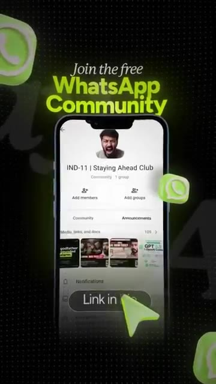
🔍 Agrandir